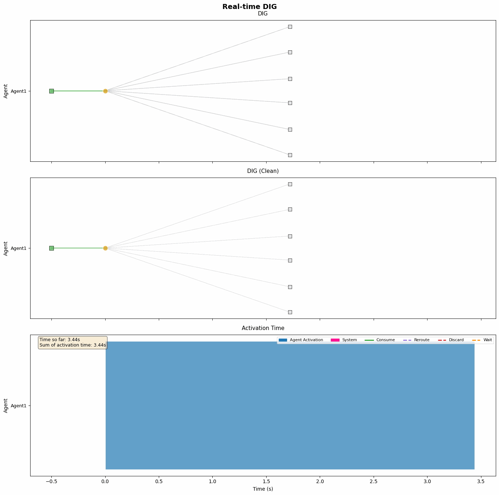
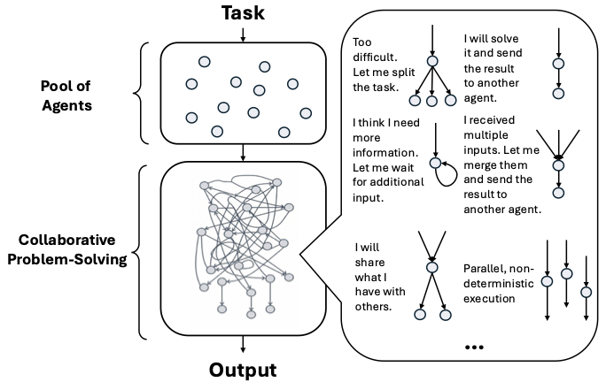
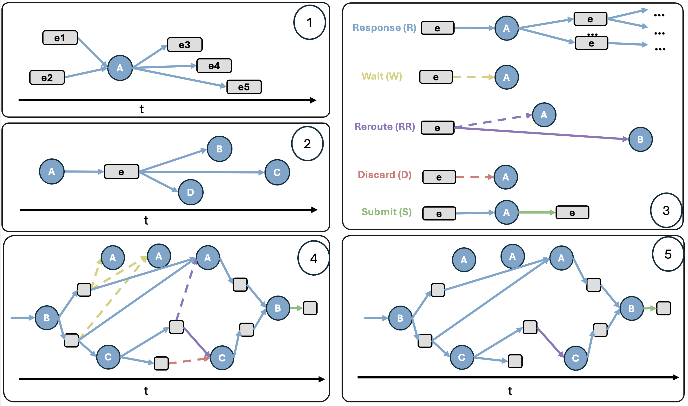
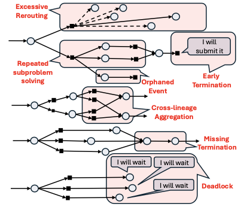
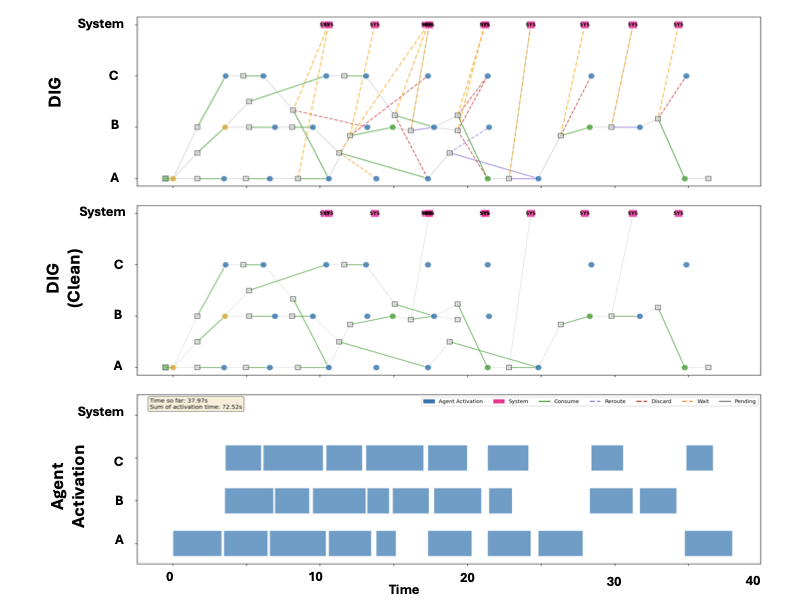
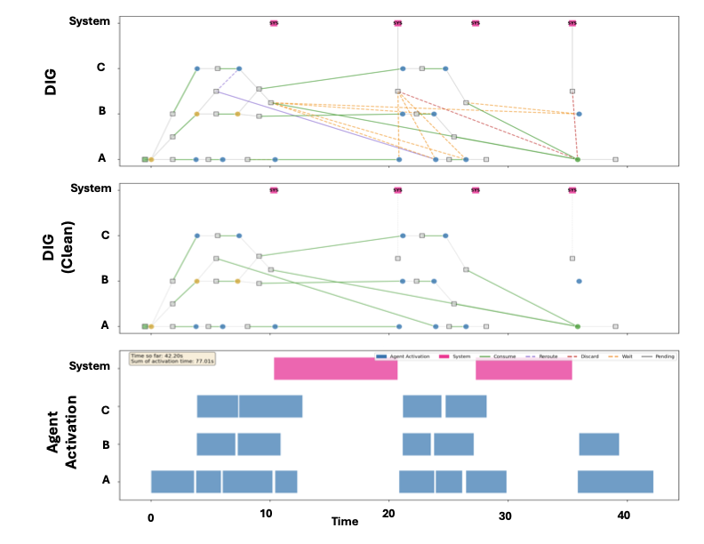
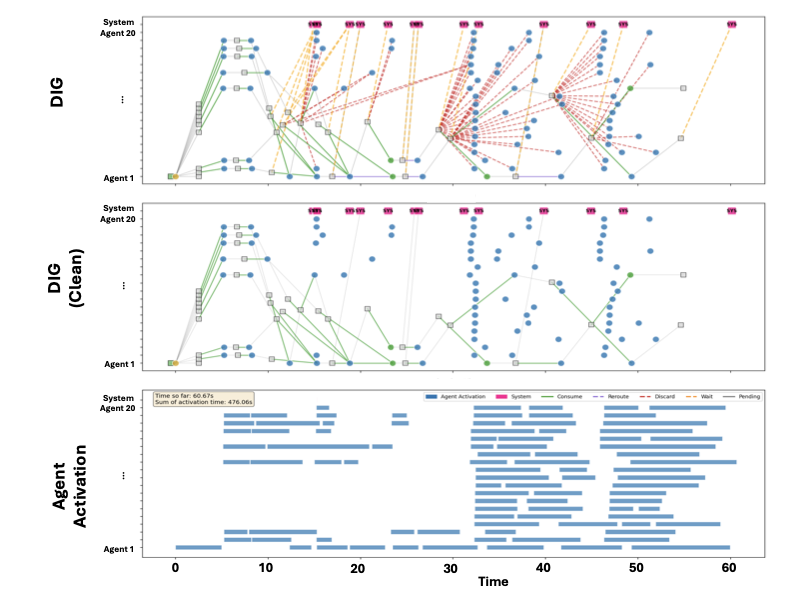
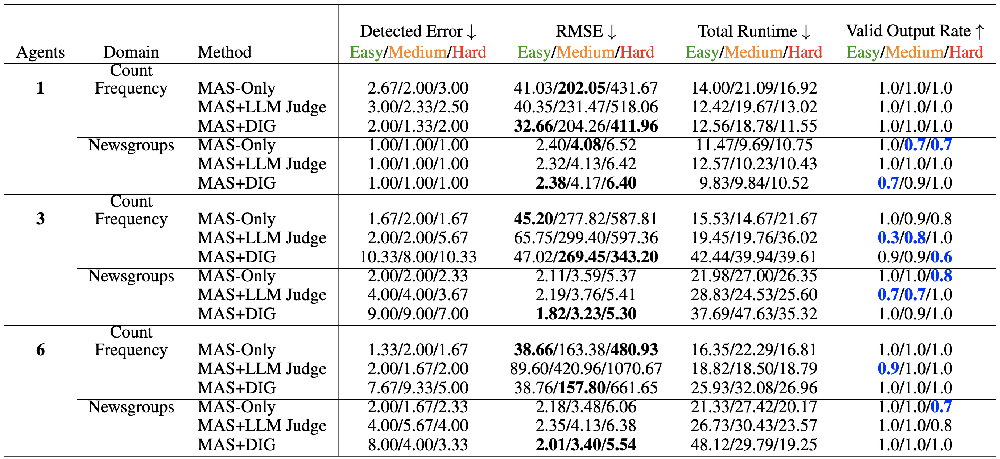

An interaction graph that makes emergent cooperation observable and enables structure-driven detection and healing for general-purpose LLM agent teams.
A pool of autonomous LLM agents works on a shared task without predefined roles, control flow, or communication constraints - each operating independently and non-deterministically, interacting through emergent cooperative strategies. In practice, such unstructured interactions lead to redundant work and cascading failures that are hard to interpret or correct.
We introduce the Dynamic Interaction Graph (DIG) - a time-evolving interaction network of agent activations and events that makes emergent cooperation observable, explainable, and healable in a protocol-agnostic manner, without any assumptions on agent internals or task structure.

We consider cooperative problem solving in systems of multiple general-purpose agents that interact asynchronously via message passing, with no predefined roles, control flow, or communication protocols. Coordination and task decomposition emerge solely from local agent decisions.
System model $\mathcal{S} = (\mathcal{A}, \mathcal{E}, \mathcal{P}, \mathbb{Z})$: a set of agents $\mathcal{A}=\{a_1,\dots,a_N\}$, interaction events $\mathcal{E}$, problem instance $\mathcal{P}$ (encoded as an initial event $e_0$ delivered at $t=0$), and discrete logical time $\mathbb{Z}$. Execution terminates when a terminal event $e_\infty$ is generated.
Agents are modeled as autonomous decision-making units with no predefined role. We abstract away agent internals and model only observable interaction behavior: $f_a : I_a \to O_a$, where $I_a, O_a \subseteq \mathcal{E}$. Each agent maintains a local event buffer $B_a(t)$; activation occurs when the buffer changes while the agent is idle.
Events $e = (p_e, \pi_e)$ carry a payload $p_e$ and a delivery policy $\pi_e$ that determines recipients $R_t(e) \subseteq \mathcal{A}$ at each logical time and updates itself to $\pi_e'$. The event expires when $\pi_e'$ is empty.
Execution trace $\mathcal{T} = \{(a_t, e_t, t)\}_{t \in \mathbb{Z}}$ records the activated agent and generated/delivered event at each logical time step.

Failures may arise from intermediate interaction structure - stalled activations, lost subproblems, duplicated work, or premature termination. We study the inference problem: given only an observable trace $\mathcal{T}$, infer a diagnosis $\Phi : \mathcal{T} \to \mathcal{F}$ operating solely on observable interaction structure, without access to agent internals.
DIG represents execution as a bipartite directed graph $G(t) = (\mathcal{V}_A(t) \cup \mathcal{V}_E(t),\, \mathcal{E}_G(t))$ with two node types: activation nodes $v \in \mathcal{V}_A$ (agent activations at logical time $t$) and event nodes $e \in \mathcal{V}_E$ (messages, artifacts, system events). Edges capture generation and delivery relationships.
The DIG evolves through local graph rewrite operators induced by agent activations. When agent $a$ is activated at time $t$, let $B_a(t)$ be its event buffer and $I_a(t) \subseteq B_a(t)$ the selected inputs. These correspond to incoming edges $E_G^{\mathrm{in}}(v) = \{(e,v) \in \mathcal{E}_G(t)\}$. A global edge rewrite semantics $\phi_v : E_G^{\mathrm{in}}(v) \to \{\texttt{consume}, \texttt{delay}, \texttt{reroute}, \texttt{discard}\}$ assigns an action label to each edge, inducing a local rewrite $\mathcal{R}_v : G(t) \to G(t^+)$.
Canonical Rewrite Operators
| Respond (R) | $I_a(t)=B_a(t)$; all edges labeled consume; input events removed from buffer, output edges $\{(v,e') \mid e' \in O_a(t)\}$ added. |
| Wait (W) | $B_a(t^+)=B_a(t)$; all edges labeled delay; no graph modification, $G(t^+)=G(t)$. |
| Reroute (RR) | Selected edges labeled reroute; each edge redirected $(e,v) \mapsto (e,v')$ to a new recipient. |
| Discard (D) | Selected edges labeled discard; edges removed $(e,v) \mapsto \emptyset$. |
| Submit (S) | Terminal Respond with $O_a(t)=\{e_\infty\}$; produces the final terminal event node. |

Global Execution Semantics. The overall system execution is the composition of local graph rewrite operators induced by activation nodes:
$$G_0 \xrightarrow{\mathcal{R}_{v_1}} G_1 \xrightarrow{\mathcal{R}_{v_2}} \cdots \xrightarrow{\mathcal{R}_{v_T}} G_T$$
where each $\mathcal{R}_{v_t} \in \{R,\, W,\, RR,\, D,\, S\}$ is determined by the edge-action labeling function $\phi_{v_t}$. The resulting trace $G_T$ is the DIG used for failure detection, diagnosis, and healing.
Cooperative general agent systems exhibit failures that arise not from isolated reasoning mistakes within individual agents, but from breakdowns in interaction structure and execution dynamics. The taxonomy is defined in terms of observable execution structure, without access to agent internals, task semantics, or predefined workflows. We consider two distinct classes of violated structural or temporal invariants: failures in preserving and exhausting work (Reachability and Coverage) and warnings indicating inefficient or risky handling of emitted work (Progress). This separation enables precise monitoring, diagnosis, and intervention. Detection remains task- and domain-agnostic, as it operates on interaction structure alone.
Detection and Healing. Whenever a new event $e$ is generated at time $t$, DIG temporarily blocks its delivery and evaluates the current interaction graph $G(t)$ for structural error patterns. When a failure is detected, the system may (i) inject new information into the event before delivery, (ii) inject and reroute it to a corrected recipient set, or (iii) create a new event and deliver it to a recipient set to heal from the failure.

| Failure Category | Failure pattern | Detection & Healing |
|---|---|---|
|
Reachability and Coverage
All reachable work should persist until consumed. The system should emit a single Submit event, and only after all reachable work has been consumed. |
Early termination (ET): a Submit event is generated while some reachable work remains unconsumed. Formally, $e_\infty \in V_E(t)$ and $\exists\, e \in R(t)$ with no directed path from $e$ to $e_\infty$. |
Detection: Submit generated despite unresolved reachable work. Healing (ii): Inject information about unresolved events; reroute Submit back to the issuing agent. |
| Missing termination (MC): all reachable work has been consumed, but no Submit event is generated within a reasonable time window. Formally, $R(t)=\emptyset$ and $e_\infty \notin V_E(t)$ past a threshold. |
Detection: Reachable set exhausted with no Submit. Healing (i): Inject a signal that all reachable work is exhausted. |
|
| Orphaned event (OE): an event is generated but has no recipients for longer than a reasonable time window. Formally, $\exists\, e \in V_E(t),\, e \neq e_\infty$ with $R_t(e)=\emptyset$. |
Detection: Generated event with empty recipient set past timeout. Healing (ii): Inject status information; reroute the event back to its generating agent. |
|
| Deadlock (DL): reachable work remains but no activation occurs within a reasonable window. Formally, $R(t)\neq\emptyset$ while $V_A(t)=\emptyset$ across a time window. |
Detection: Pending work with no active agent past timeout. Healing (iii): Create a new event and broadcast to all agents to restart activity. |
|
|
Progress
Generated events should be consumed downstream within a reasonable time; repeated deferral, rerouting, or redundant handling indicates risk. |
Excessive rerouting (ER): an event is repeatedly Rerouted across activations without being Consumed. Formally, $\exists\, e \in V_E(t)$ whose delivery edges are rerouted more than a reasonable threshold. |
Detection: Reroute count on an event exceeds threshold. Healing (i): Inject information indicating repeated rerouting into the event. |
| Cross-lineage aggregation (CLA): events from different problem-generating activations are delivered to the same recipient. Formally, $\exists\, v \in V_A(t)$ and $e \neq e' \in I_v$ with no common generating activation ancestor. |
Detection: Inputs to an activation span multiple unrelated lineages. Healing (i): Inject ancestry information into each event. |
|
| Repeated subproblem solving (RSP): multiple problem-reducing activations consume the same upstream event $p$. Formally, $\exists\, p \in V_E(t)$ and problem-reducing activations $v \neq v'$ with $p \in I_v \cap I_{v'}$. |
Detection: Same upstream event consumed by multiple reducers. Healing (i): Inject information on which part of the result may be repeated. |
We evaluate on CountFrequency and 20Newsgroups across three difficulty levels and 1, 3, and 6 agents, reporting detected error counts, prediction accuracy (RMSE), runtime, and valid output rate - averaged over multiple runs. We compare MAS-Only, MAS+LLM Judge, and MAS+DIG.
Reliability at Scale
MAS+DIG generally achieves the lowest RMSE and higher valid output rates, especially on hard tasks. As agent count and task difficulty increase, DIG more frequently enables the system to complete with valid and accurate results - whereas MAS-Only and MAS+LLM Judge frequently fail to produce valid outputs at all.
Detection Overhead is Intentional
Higher detected error counts and longer runtimes for MAS+DIG reflect active healing, not worse performance: healing keeps the system running longer, exposing and resolving additional failures. MAS-Only appears faster with fewer errors only because failures go undetected and unresolved.
LLM Judge Overhead
The LLM Judge baseline incurs high healing overhead, making real-time intervention impractical. Despite this cost, it often yields higher RMSE and lower valid output rates - not every intervention improves performance. DIG-based interventions are structure-driven, not semantic, and incur negligible overhead.



Case study: 20-agent scale. A 20-agent run on CountFrequency with 100,000 elements (10× the hard setting) demonstrates DIG's scalability. The baseline MAS fails to produce any result within 120 s without healing; MAS+DIG produces a valid answer within 70 s (RMSE 5812.69, ~5.8% relative error), detecting 1 missing completion, 8 repeated-effort incidents, 2 dependency warnings, 1 orphaned event, and 4 early termination errors. MAS+LLM Judge shows increasingly fragmented interaction patterns as system size grows.

@article{yang2026dig,
title = {DIG to Heal: Scaling General-purpose Agent Cooperation via Explainable Dynamic Decision Paths},
author = {Yang, Hanqing and Lee, Hyungwoo and Yao, Yuhang and Liu, Zhiwei and Liu, Kay and Chen, Jingdi and Joe-Wong, Carlee},
year = {2026},
note = {Preprint}
}